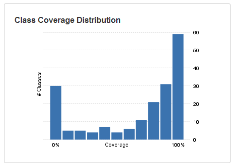

In Clover's HTML reports, the dashboard page provides a summary of the coverage and unit test results, as well as suggested entry points for the rest of the report.
Selected widgets:
- The Class Coverage Distribution chart shows a breakdown of how many classes have a given percentage of coverage. This offers a more granular insight into the nature of your project's coverage, compared to an aggregate overall percentage. You can mouse-over the chart's data points to see exactly how many classes are represented in each band.

- The Class Complexity chart allows you to quickly spot classes with high complexity, as well as low coverage. Expressed as a scatter plot, outlying classes are readily visible because they will rise prominently above the mean. You can mouse-over the chart's data points to see the names of the classes displayed and also click them, to access information about that class.